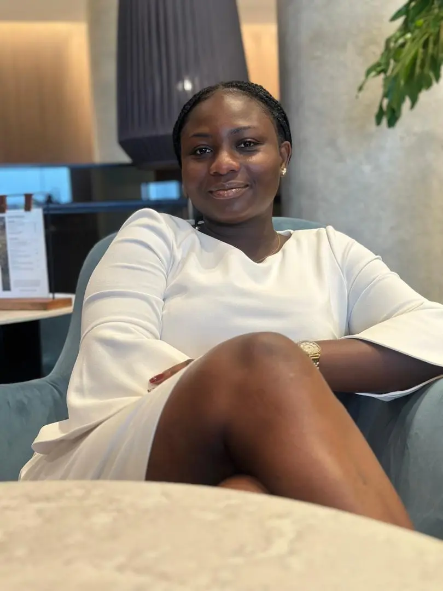

Profiles of Local Hair Stylists and Brands
AnnTheStylist
 Profile:
Name: Elizabeth Ann
Position: Lead Hair Stylist
Experience: 10 years in the hair industry
Specialization: Braids, natural hair care, and creative hair coloring
Instagram: @AnnTheStylist
Bio: Elizabeth Ann is a passionate and highly skilled hair stylist with a decade of experience in transforming clients' looks. Known for her expertise in braids, natural hair care, and creative coloring, Ann brings out the best in every hair type. Her dedication to continuous learning and innovation has earned her a loyal clientele and recognition in the hair industry.
Interview:
How did you get started in the hair industry?
My journey in the hair industry began as a teenager, helping friends and family with their hair. I realized how much joy it brought me to see their reactions to their new looks. I pursued formal training and started working at a salon right after graduation, and I've been loving every moment since.
What do you love most about being a hair stylist?
The best part about being a hair stylist is the ability to transform someone's confidence along with their appearance. It's incredibly rewarding to help clients feel beautiful and express their individuality through their hairstyles.
What is your favorite hairstyle to create?
I have a special love for braids. There is something timeless and versatile about them. Plus, they offer so many opportunities for creativity, from intricate patterns to adding accessories.
How do you keep up with the latest trends and techniques?
I constantly attend workshops and hair shows, follow leading stylists and influencers on social media, and experiment with new techniques in my free time. Staying updated is crucial in this ever-evolving industry.
What advice do you have for someone looking to pursue a career in hair styling?
Stay passionate and never stop learning. The hair industry is always changing, and it's important to keep honing your skills. Building a strong relationship with clients and understanding their needs is also key to success.
PaaEDStyle
Profile:
Name: Paa Kwesi
Position: Senior Hair Stylist
Experience: 8 years in the hair industry
Specialization: Natural hair styling, dreadlocks, and hair treatments
Instagram: @PaaEDStyle
Bio: Paa Kwesi is a skilled and innovative hair stylist with a passion for natural hair. With eight years of experience, Paa specializes in natural hair styling, dreadlocks, and various hair treatments. His creativity and attention to detail have earned him a dedicated following and a reputation as a top stylist in the industry.
Interview:
What inspired you to specialize in natural hair care?
Growing up, I saw many people struggle with accepting and caring for their natural hair. I wanted to change that narrative and help others embrace and celebrate their natural beauty. Natural hair is so versatile and unique, and I love showcasing its beauty through my work.
What is your favorite part of working with clients?
I enjoy the transformation process the most. Seeing a client's face light up when they look in the mirror and feel confident in their new hairstyle is priceless. It's a reminder of why I love what I do.
How do you approach creating a new hairstyle for a client?
I always start by listening to the client's needs and preferences. Understanding their lifestyle, hair type, and desired look helps me create a style that suits them perfectly. I also provide tips on maintaining the style at home to ensure long-lasting results.
What are some common misconceptions about natural hair care?
One common misconception is that natural hair is difficult to manage. In reality, natural hair is versatile and can be styled in various ways with the right products and techniques. It's all about finding what works best for your hair type and embracing its unique characteristics.
What advice do you have for maintaining healthy natural hair?
Consistency is key. Establishing a regular hair care routine that includes moisturizing, protective styling, and minimal manipulation will help keep your hair healthy and strong. Also, don't be afraid to experiment with different styles and products to find what works best for you.